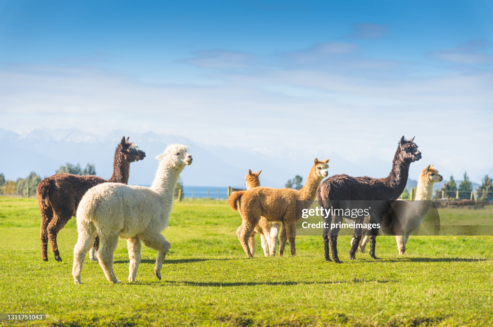

Holl & Stone
Holl & Stone is a family-owned working farm located in Garner, NC.

History
The farm was first established in 1878 by William D. Buffaloe. In 2020 new owners Dustin and Burton Buffaloe reimagined the farm and transformed it into a unique experience for the whole family.
Things to Do
There are plenty of attractions at Holl & Stone, indlucing
- a petting zoo with goats, chickens, and alpacas
- a shop with unique gifts and branded merchandise
- a café and bar with a variety of beverages
- an ice cream shop featuring New Zealand style ice cream and rotating seasonal flavors
Know Before You Go
Before you visit, keep in mind
- admission and paring is free
- there are restrooms and hand-washing stations by the petting zoo
- bug spray and sunscreen are encouraged
External Links
More information can be found at hollandstonefarms.com.